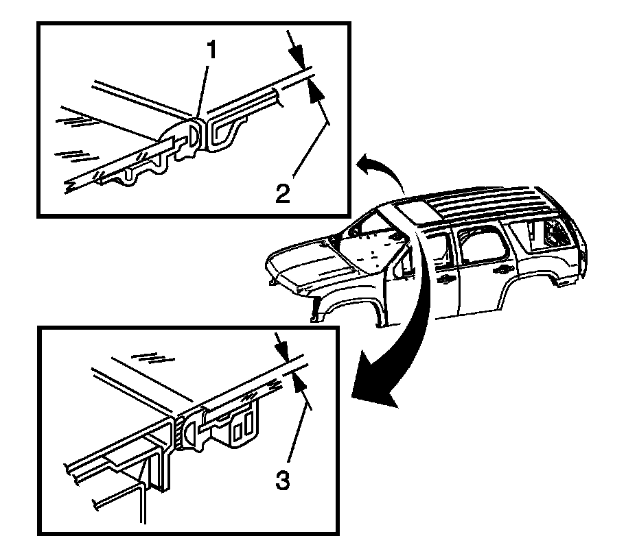

Sunroof / Moonroof Panel: Adjustments
SUNROOF WINDOW HEIGHT AND OPENING FIT ADJUSTMENT
WINDOW HEIGHT SET
1. Slide the sunroof sunshade to the open position.
2. Remove the sunroof panel side covers.
3. Cycle the sunroof to the fully closed position.
4. Loosen the sunroof window panel screws.

5. Individually adjust the 4 corners of the sunroof window panel.
6. Adjust the front of the sunroof window panel to 0.0 - 1.0 mm (0.040 in) below the top surface (3) of the roof panel.
7. Adjust the rear of the sunroof window panel to 1.0 + 0.0 mm (0.040 in) above the top surface (2) of the roof panel.
8. Tighten the sunroof window panel screws.
NOTE: Refer to Fastener Notice.
Tighten the sunroof window panel screws to 4 N.m (35 lb in).
9. Install the sunroof panel side covers.
10. Close the sunshade.